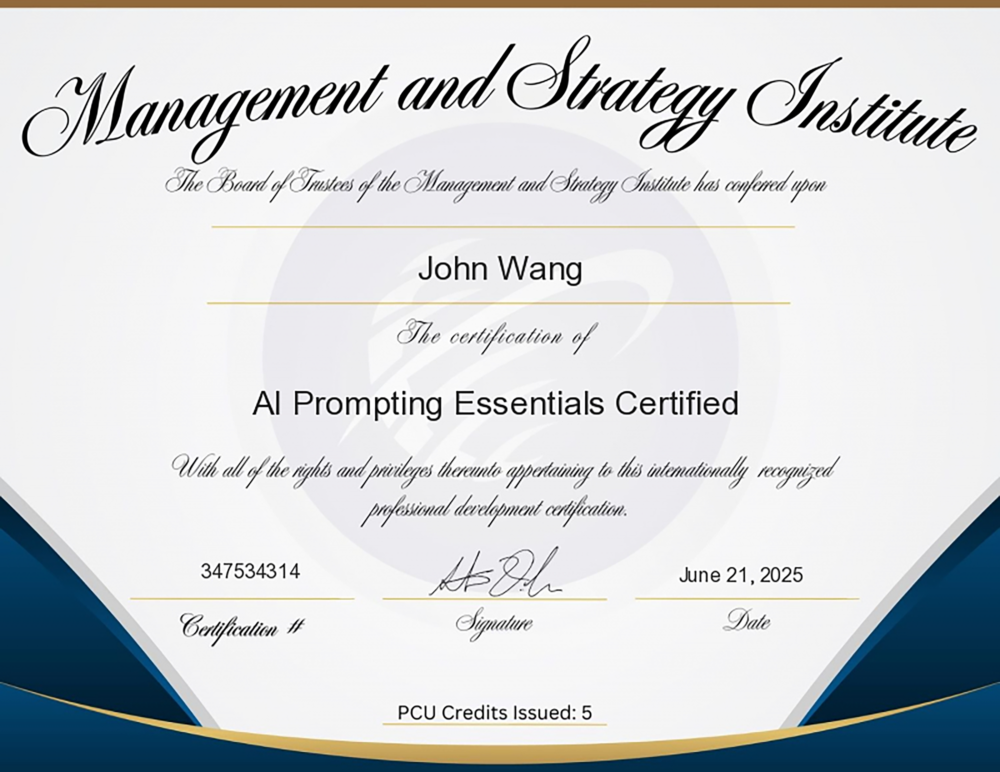
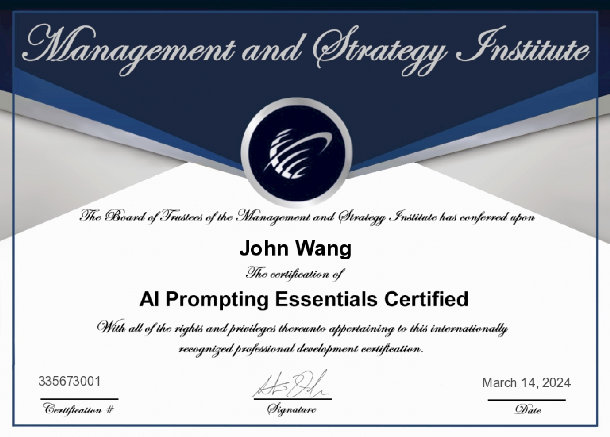

John's Artificial Intelligence Certificates
- Strategy
- Product Management
- Agentic AI
- Multi-Agent Systems
- Multi AI Agent Systems with CrewAI from CrewAI by João Moura
- Mastering Multi-Agent Development with AutoGen from Packt by Paulo Dichone
- Elevate Team Productivity with Crew AI from Coursera by Yash Thakker
- Applying Multi-agent Systems to Daily Tasks from Pluralsight by Bogdan Sucaciu
- Developing Task-specific Agents with CrewAI from Pluralsight by Jon Friskics
- Introduction to LangGraph from Pluralsight by Craig Golightly
- Basics of LangGraph Workflows from Pluralsight by Craig Golightly
- Model Context Protocol (MCP)
- Generative AI
- Prompt Engineering
- Retrieval-Augmented Generation (RAG)
- Security
- Governance
- Applications
- AWS
Strategy (1)
AI Strategy and Governance from University of Pennsylvania, Wharton School

Product Management (1)
AI for Product Management from Pendo

Agentic AI (4)
Fundamentals of Agents from Hugging Face
{kind=link}

Introduction to Developing AI Agents from Pluralsight by Muhammad Sajid

OpenAI Assistant API from Pluralsight by Xavier Morera
Deploying AI Agents in Production Environments from Pluralsight by Pratheerth Padman

Multi-Agent Systems (7)
Multi AI Agent Systems with CrewAI from CrewAI by João Moura

Mastering Multi-Agent Development with AutoGen from Packt by Paulo Dichone
Elevate Team Productivity with Crew AI from Coursera by Yash Thakker

Applying Multi-agent Systems to Daily Tasks from Pluralsight by Bogdan Sucaciu

Developing Task-specific Agents with CrewAI from Pluralsight by Jon Friskics
Introduction to LangGraph from Pluralsight by Craig Golightly
Basics of LangGraph Workflows from Pluralsight by Craig Golightly
Model Context Protocol (MCP) (2)
Fundamentals of MCP (Model Context Protocol) from Hugging Face
{kind=link}
Foundations of Model Context Protocol from Analytics Vidhya by Apoorv Vishnoi

Generative AI (5)
Introduction to Generative AI from Google Cloud

Introduction to Image Generation from Google Cloud

Duet AI in Gmail from Google Cloud

ChatGPT for Excel from Great Learning Academy by E. Balachandra Murthy

Databricks Accredited Generative AI Fundamentals from Databricks

Prompt Engineering (1)
AI Prompting Essentials Certified (AIPEC) from Management and Strategy Institute


Retrieval-Augmented Generation (RAG) (3)
Vector Space Models and Embeddings in RAGs from Pluralsight by Axel Sirota

Multi-modal RAGs from Pluralsight by Dhiraj Kumar

Modular RAGs from Pluralsight by JS Padoan

Security (3)
Defending Against AI-Generated Attacks from Codecademy

Security Risks and Privacy Concerns Using Generative AI from Pluralsight by Dr. Shaila Rana

AI Security from Lakera

Governance (1)
Introduction to Responsible AI from Google Cloud

Applications (1)
Using Generative AI to Refine Communications to Executives from Pluralsight by Ed Freitas

AWS (1)
Introduction to Amazon Bedrock from Pluralsight by Muhammad Sajid